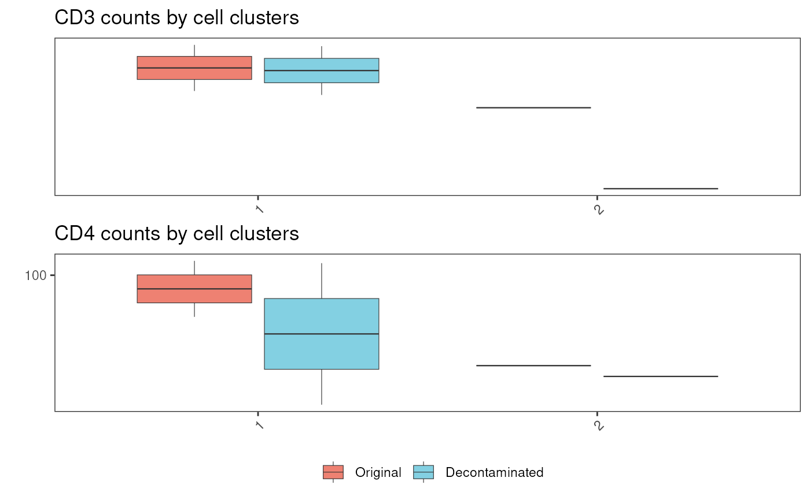

Boxplot of features grouped by cell type
Arguments
- counts
original count matrix of nADT x nDroplet.
- decontaminated_counts
decontaminated count matrix, with the droplets of
countsin the same order. If both have column names, they must be the same.- cell_type
1xnDroplet vector of cell_type, one entry per droplet (column of
counts).- features
names of ADT to plot. Each must be a rowname of both
countsanddecontaminated_counts.- file
file name to save the plot into as a pdf. ".pdf" is added unless
filealready ends in ".pdf". If omitted, return the plot.
Value
A patchwork object with one ggplot per feature, or,
if file is given, the path of the saved pdf, invisibly.
Examples
# Simulate a dataset with 3 cells and 2 ADTs
counts <- matrix(c(60, 72, 52, 49, 89, 112),
nrow = 2,
dimnames = list(
c("CD3", "CD4"),
c(
"CTGTTTACACCGCTAG",
"CTCTACGGTGTGGCTC",
"AGCAGCCAGGCTCATT"
)
)
)
decontaminated_counts <- matrix(c(58, 36, 26, 45, 88, 110),
nrow = 2,
dimnames = list(
c("CD3", "CD4"),
c(
"CTGTTTACACCGCTAG",
"CTCTACGGTGTGGCTC",
"AGCAGCCAGGCTCATT"
)
)
)
plotBoxByCluster(
counts,
decontaminated_counts,
c(1, 2, 1),
c("CD3", "CD4")
)
